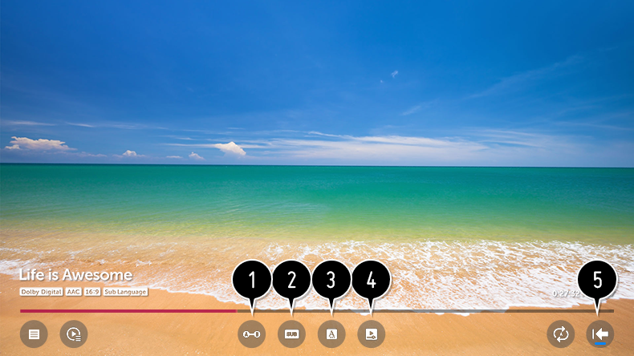

Administración de las grabaciones
Puede ver y reproducir las grabaciones almacenadas en los dispositivos de almacenamiento desde la aplicación Grabaciones.
- Pulse el botón del mando a distancia y seleccione la pestaña Grabaciones de la parte izquierda de la pantalla.
- Seleccione la opción de la parte superior derecha.
- Permite seleccionar el dispositivo de almacenamiento que se va a utilizar, el tipo de grabaciones y el método de ordenación.
- Permite seleccionar y eliminar el contenido deseado.
-
Permite mostrar información detallada sobre el contenido.
Puede cambiar el título del contenido en la ventana emergente de información detallada. - Inicie Búsqueda.
Solamente puede reproducir las grabaciones realizadas en la TV actual en Grabaciones.
Reproducción de grabaciones
Puede acceder a las funciones básicas, como la reproducción y pausa en la pantalla de reproducción.
- Seleccione la grabación que desee de la aplicación Grabaciones.
- Puede controlar la reproducción de la grabación deseada pulsando el botón durante la reproducción.
- Puede utilizar las funciones relacionadas con la reproducción básica.
- Puede realizar los ajustes relativos a la reproducción al repetir el vídeo.
- Esto le llevará a una pantalla en la que podrá configurar otras funciones.
Configuración de funciones adicionales
Puede configurar Repetir A-B, Subtítulos, etc.
- Pulse el botón durante la reproducción de la grabación deseada.
- Seleccione en la pantalla.

- Permite especificar la sección que desee repetir o editar y guardar.
- Permite activar y desactivar los subtítulos.
- Permite seleccionar el idioma de audio que se reproducirá.
-
Puede establecer continuar viendo para seguir reproduciendo desde la última escena vista.
Cuando se enciende la TV con Inicio rápido+, es posible que continuar viendo no funcione inmediatamente.
- Vuelve a la pantalla de funcionamiento básico.
Los elementos configurables varían según el modelo.